Dynamic Time System
Atomic Time System
Civilian Time System
Natural Time System
Namely: Sidereal Time and Universal Time
From Earth motion to atoms oscillation
useful for Earth-based observations in the CTRFs
for transferring between CCRF to CTRFs
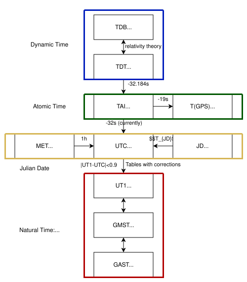
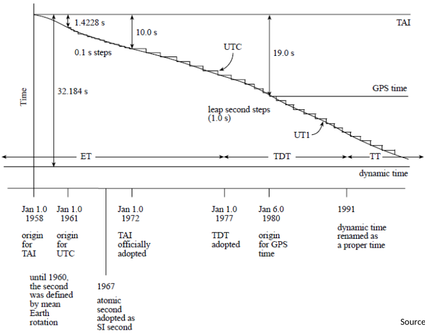
Until 50s: Second based on length of mean solar day
But: Earth's rotation not uniform enough to measure second: Short-term & Long-term irregularity
-> Redefine second on orbital (Newtonian) motion of Earth around sun
Not considered: Relativistic Theory & Effects of planet etc. on Earth rotation around sun
-> Dynamic time scale
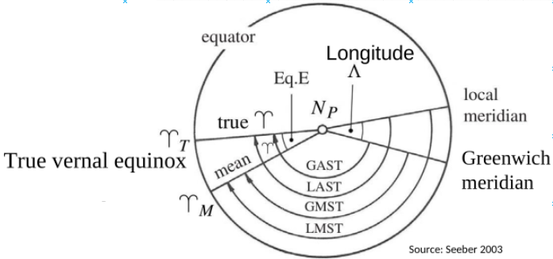
Definition: hour angle of vernal equinox
Difference between Apparent ST (AST) and Mean ST (MST) due to nutation
Scale in ST system: mean sidereal day
Relationship between AST & MST alias Equation of the Equinox
Attention: Precession: Mean Vernal Point move w.r.t true vernal point
m = 4612.4362 (arcSec/cent.) + 2.79312 (arcSec/cent^2)T
24 hours of mean ST less than one complete rotation
Remember: GAST for transformation from CCRS to mean CTRS
Definition: Hour Angle of Sun
No Precession error, like vernal point
Fictious mean sun moving on equator with constant velocity
Scale
: Mean Solar day: 2 consecutive transits of the mean sun across same meridian (corrected for polar motion)
1 Sol. day = 24 Sol. hrs = 86400 Sol. sec
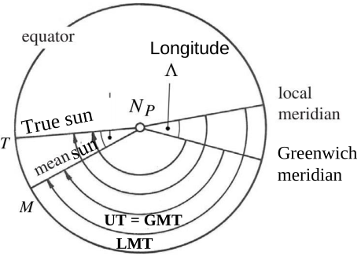
Irregularity due to Earth's rotation in CCTS
UT from observation at station
UT0: UT from observations w.r.t true (instantaneous) pole position
UT1: determined w.r.t CTP
UT1 = UT0+\Delta\lambda_{pole}
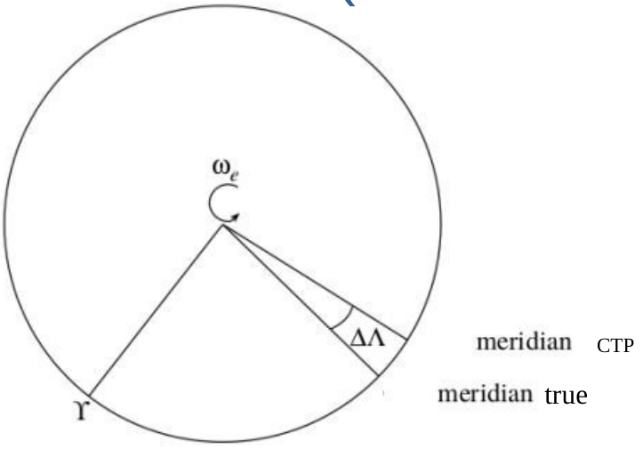
UT1 still experiences small irregularities
1 mean solar day = 24h 03m 56.5554s in sidereal time
1 mean sidereal day = 23h 56m 04.0905s in solar time
1 mean sidereal day = 1 mean solar day – 3m 55.909s
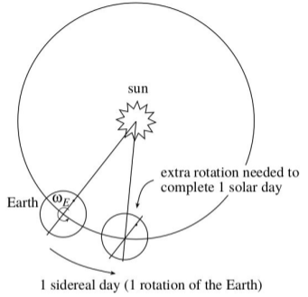
In Scientific work: Continuous counting/dating more convenient
36 525 days per century
Fundamental Epoch: 12h UT on 01.01.4713 B.C.
Julian day number as day in continuous count since fundamental epoch
JD of standard epoch of UT: J2000.0
For convenience: Modified Julian Date (MJD):
First realised in 1955
Origin for atomic time officially: UT1 time 0h 0m 0s (midnight) 01.01.1958
International Atomic Time (TAI) officially adopted January 1972
TAI realised over 200 high-precision atomic clocks around the world located at sea level
Worldwide synchronisation about 100nanoSec
Alias: Statistical clock/time
All civil clocks set w.r.t. a TAI standard
Scale scaled to the duration of the ephemeris second
Precision: Consider General Relativistic effects from spatially varying gravitational potential
Atomic Second: Duration of 9 192 631 700 period of the radiation
Corresponding to transition between 2 hyperfine levels of ground state of Cesium 133 atom
e^- close to nucleus have higher energy
Known energy gap between low and high energy
Apply exactly the specific amount of energy via microwaves (9.192631700 MHz)
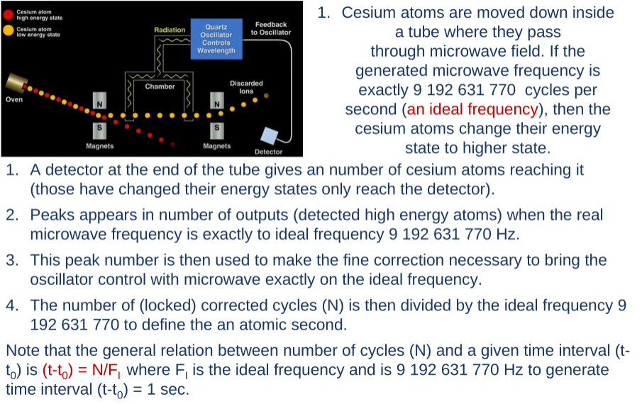
Corresponding error in time:
\Delta t_i=T_i(t_0)+T_i(t-t_0)+\frac{D_i}2(t-t_0)^2+\underline{\int^t_{t_0}y(t)dt}\sigma^2_y(\tau)=\frac 1N\sum^N_{k=1}\frac 12(\bar y_{k+1}-\bar y_l)^2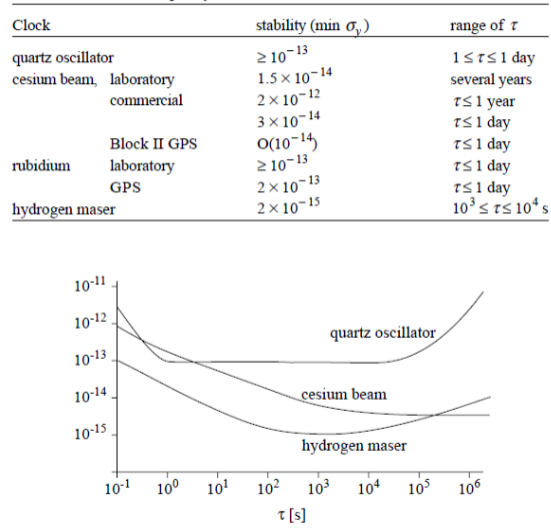
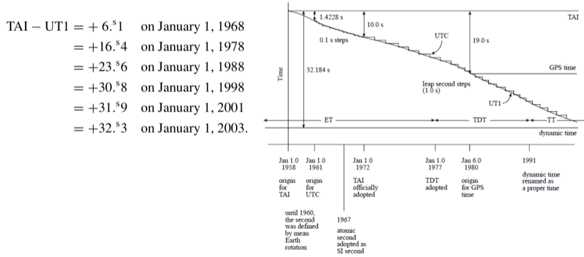
TAI is highly uniform time scale
But: Still need to correspond to UT1 (solar time)
Universal Time Coordinated UTC defined in 1972
|UT1-UTC|<0.9s
TAI-UTC = n\cdot/1s
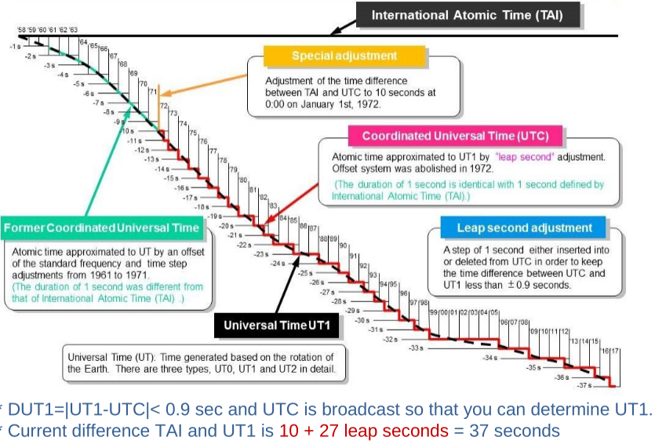
t_{GPS}=TAI-19s\\
T_{GPS}-UTC=n\cdot sec-C_0where n is integer & C_0 in order of ns
GPS receiver provides access to TAI and UTC with accuracy <1\mu s
GPS phase and pseudorange measurements given in GPS time
GPS satellite clocks run 45\mu s/day faster relative to atomic clocks on ground (General Relativity)
DUT1 = UT1-UTC
DUT1\in(-0.9;0.9)
leap second to keep up with UT1 (GMT or GMSolartT corrected for polar motion)
Values of DUT1 with precision 0.1s broadcasted by time signal service.
Find DUT1 by estimating UT1
VLBI is only geodetic method allowing direct measurement of UT1
GNSS, DORIS, SLR only determine time derivation of UT1 (LoD)
No differentiation between
Orbital plans of satellite precess relative to vernal point
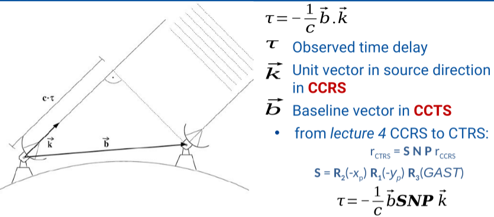
Parameters to be estimated from observations of time delays include:
Determining GAST from VLBI \tau observations:
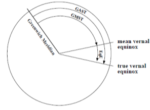
Given right ascension of mean sun: Determine UT1:
\alpha_{mSun} is function of Julian date (IAU 1982)
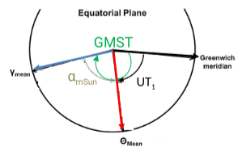
Standard VLBI for EOPs estimation based on globally distributed VLBI stations over 24 hours (multi-station network)
VLBI intensive (short-time) sessions
To determine only UT1: take advantage of reducing observations:
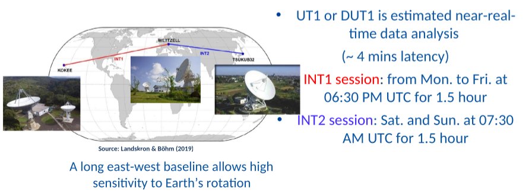
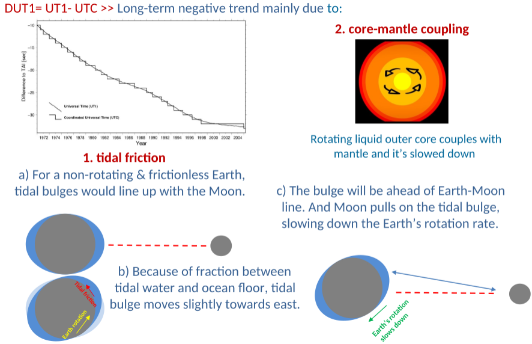
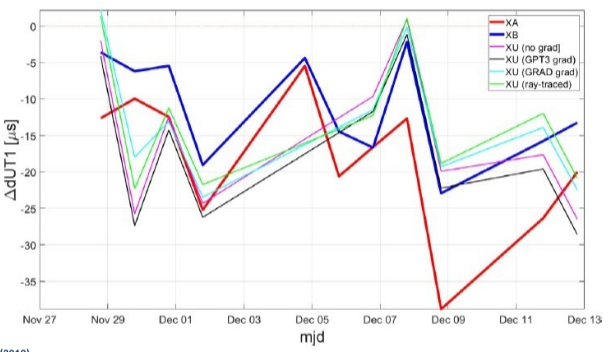
Daily Variations of DUT1: Length of Day (LoD) or UT1-UTC drift
IERS definition:
Related to instantaneous angular rate of Earth \omega = \text{nominal rotation rate}\cdot (1-\frac{LoD}{86,400}
nominal rotation rate = 7.2921151467064\times 10^{−5}\frac{rad}{s}
IERS: \omega =72,921,151.467064 – 0.843,994,803 LoD
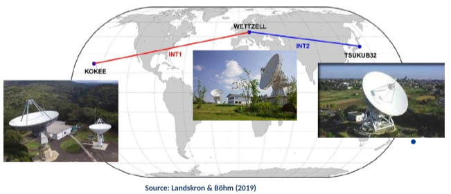
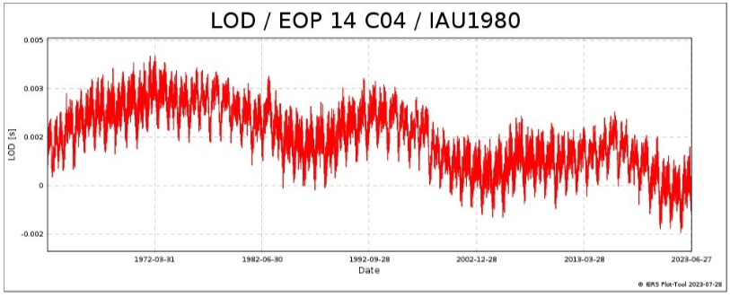
Long-term trend
Inter-decadal variations (~8.6 years)
Seasonal variation
Effect of human
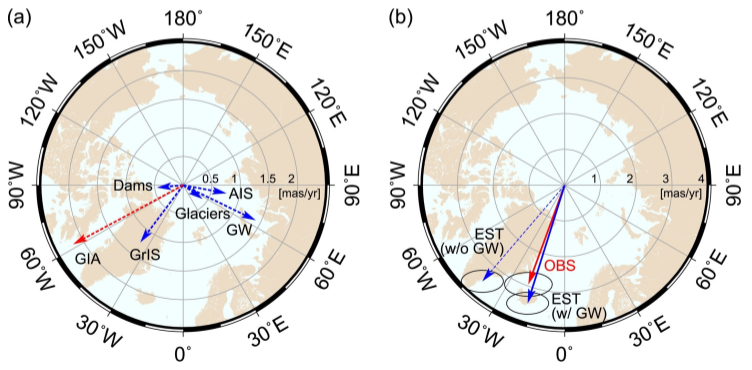